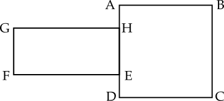

Kemampuan Dasar
Atlet bulu tangkis Anthony Ginting akan menjalani pertandingan persahabatan dengan rekan sesama timnya, Jonathan Christie. Pertandingan akan berakhir apabila salah satu pemain memenangkan dua set secara langsung atau memenangkan dua dari tiga set permainan (rubber set). Tim pelatih Anthony Ginting menyatakan bahwa peluang Anthony Ginting dapat memenangkan suatu set adalah $1,6$ kali lipat peluang Anthony Ginting memenangkan pertandingan. Pertandingan tidak dapat berakhir seri/imbang. Berdasarkan pernyataan tim pelatih Anthony Ginting tersebut, peluang Jonathan Christie memenangkan pertandingan tersebut adalah...
- $\dfrac{1}{4}$
- $\dfrac{3}{4}$
- $\dfrac{5}{32}$
- $\dfrac{27}{32}$
Diketahui sistem persamaan dengan $a,b,$ dan $c$ adalah bilangan riil positif. $$\begin{array}{rl}a&=bc\\b&=c(a+2)\\c&=b(a-2)\end{array}$$ Nilai dari $a^2+b^2+$ $c^2$ adalah...
- $15$
- $15-4\sqrt{15}$
- $225$
- $15+4\sqrt{15}$
Diketahui suatu kerucut dengan titik puncak $T,$ pusat sisi alas $O,$ dan diameter alas $AB.$ Titik $C$ berada pada ruas garis $AT$ dengan $AC=OC=$ $11$cm. Titik $D$ merupakan titik potong antar garis $OT$ dan $BC$ dengan $DC=7$cm. Volume kerucut tersebut adalah ... cm persegi.
 Perhatikan gambar di atas. Pada gambar 1, misalkan $E$ dan $F$ masing-masing adalah titik tengah $CQ$ dan $PD.$ Sekarang potong $ABEF$ sehingga terbentuk segitiga seperti pada gambar 2. Maka jelas $$CE+FD=CD-EF=19-14=5.$$ Akibatnya $$\begin{array}{rcl}PQ&=&CD-(CE+FD+EQ+PF)\\&=&CD-2(CE+FD)\\&=&19-10\\&=&9\end{array}$$
Perhatikan gambar di atas. Pada gambar 1, misalkan $E$ dan $F$ masing-masing adalah titik tengah $CQ$ dan $PD.$ Sekarang potong $ABEF$ sehingga terbentuk segitiga seperti pada gambar 2. Maka jelas $$CE+FD=CD-EF=19-14=5.$$ Akibatnya $$\begin{array}{rcl}PQ&=&CD-(CE+FD+EQ+PF)\\&=&CD-2(CE+FD)\\&=&19-10\\&=&9\end{array}$$
- $196\pi$
- $960\pi$
- $1960\pi$
- $9600\pi$
Suatu bilangan $4$ digit $\overline{7ab9}$ merupakan suatu bilangan kuadrat. Nilai $a+b$ adalah...
Perhatikan bahwa $$\sqrt{7000}=\sqrt{70}\cdot \sqrt{100}=8,...\cdot 10.$$ Oleh karena kita dapatkan $$83^2=6889<\overline{7ab9}<8100=90^2.$$ Bilangan kuadrat diantara itu dengan satuan $9$ hanyalah $$87^2=7569.$$ Jadi $a+b=11.$
Diberikan fungsi kuadrat $f(x)=$ $ax^2+$ $bx+$ $c$ yang memenuhi $f(5)=25$ dan $f(6)=36.$ Jika $a\ne 1,$ maka nilai dari $\frac{c-b}{a-1}$ adalah...
Misalkan $g(x)=$ $f(x)-$ $x^2.$ Maka $g(5)=$ $g(6)=0.$ Jadi $g(x)$ persamaan kuadrat dengan akar $5$ dan $6.$ Maka $$\begin{array}{rl}f(x)&=g(x)+x^2\\&=k(x-5)(x-6)+x^2\\&=(k+1)x^2-11kx+30k\end{array}.$$ Jadi $\dfrac{c-b}{a-1}=$ $\dfrac{30k-(-11k)}{k+1-1}=41.$
Dua tim $A$ dan $B$ bertanding sepakbola sebanyak $15$ kali. Pada setiap pertandingan, tim yang berhasil mencetak $4$ gol pertama menjadi pemenang dan tidak ada pertandingan yang berakhir seri. Selama $15$ pertandingan tersebut, tim $A$ memenangkan pertandingan lebih banyak dibandingkan tim $B,$ namun banyak gol yang dicetak tim $B$ lebih banyak dibandingkan tim $A.$ Selisih total gol terbesar yang mungkin dicetak kedua tim tersebut adalah...
Dalam soal ini kita ingin memaksimalkan selisih yang mana artinya memaksimalkan gol $B$ dan meminimumkan gol $A.$ Maka jelas gol $A$ akan minimum jika hanya $A$ menang tipis dari $B$ pada $8$ pertandingan dan $B$ menang telak dari $A$ pada $7$ pertandingan lainnya.
Jadi selisih maksimal gol $B$ dan $A$ adalah $(28+$ $24)-$ $32=20.$
| $A$ menang $8$ kali menang tipis $4\cdot 8$ gol $A$ dan $3\cdot 8$ gol $B$ | $B$ menang 7 kali menang telak $7\cdot 4$ gol $B$ dan $0$ gol $A$ |
Diberikan segitiga lancip $ABC$ dengan $AB=12$ dan $AC=10$ dan $D$ suatu titik pada sisi $BC.$ Misalkan $E$ dan $F$ menyatakan titik-titik berat segitiga $ABD$ dan $ACD.$ Jika luas segitiga $DEF$ adalah $4,$ maka panjang sisi $BC$ adalah $\sqrt{n}$ dengan $n=\cdots$
Perhatikan gambar di atas. Kita tahu karena $E$ titik berat maka $DE:EG=$ $2:1.$ Sekarang misalkan $G$ dan $H$ masing-masing adalah titik tengah $AB$ dan $AC.$ Maka $DG$ akan melewati $E$ dan $DH$ akan melewati $F.$ Perhatikan bahwa
$\triangle DGH\sim$ $\triangle DEF$ sehingga kita peroleh $$\begin{array}{rcl}\dfrac{\left[DGH\right]}{\left[DEF\right]}&=&\dfrac{3^2}{2^2}\\\left[DGH\right]&=&\frac{9}{4}\cdot 4\\&=&9\end{array}$$ Perhatikan bahwa $GH$ sejajar $BC$ dan misalkan tinggi $\triangle BDG$ adalah $t,$ maka $$\begin{array}{rcl}\dfrac{\left[DGH\right]}{\left[GHBC\right]}&=&\dfrac{\frac{1}{2}t\cdot GH}{\frac{1}{2}t\cdot (GH+2GH)}\\\left[GHBC\right]&=&3\left[DGH\right]\\&=&27\end{array}$$ Selanjutnya perhatikan bahwa $$\begin{array}{rcl}\dfrac{\left[AGH\right]}{\left[ABC\right]}&=&1/4\\\left[AGH\right]&=&\dfrac{1}{4}(\left[AGH\right]+\left[GHBC\right])\\\dfrac{3}{4}\left[AGH\right]&=&\dfrac{1}{4}\cdot 27\\\left[AGH\right]&=&9.\end{array}$$ Akibatnya $\left[ABC\right]=36.$ Gunakan rumus sinus untuk mencari luas. $$\begin{array}{rcl}\frac{1}{2}\sin A\cdot 12\cdot 10&=&36\\\sin A&=&\dfrac{6}{10}=\dfrac{3}{5}\end{array}$$ Maka nilai $\cos A=\dfrac{4}{5}.$ Jadi $$\begin{array}{rcl}BC^2&=&AB^2+AC^2-2AB\cdot AC\cdot \cos A\\&=&12^2+10^2-2\cdot 12\cdot 10\cdot \dfrac{4}{5}\\&=&144+100-192\\&=&52\end{array}$$

Sisa pembagian bilangan $5^{2022}+11^{2022}$ oleh $64$ adalah...
Perhatikan bahwa $$\begin{array}{rll}5^{2022}+11^{2022}&=(8-3)^{2022}+(8+3)^{2022}\\&=2\binom{2022}{0}8^{2022}+2\binom{2022}{2}8^{2020}3^2+\cdots+2\binom{2022}{2022}3^{2022}\end{array}.$$ Ketika dibagi dengan $64=8^2,$ maka hanya akan bersisa $$2\binom{2022}{2022}3^{2022}=2\cdot 3^{2022}.$$ Selanjutnya perhatikan bahwa $$\begin{array}{rll}2\cdot 3^{2022}&=(8+1)^{1011}\\&=2\binom{1011}{0}8^{1011}+2\binom{1011}{1}8^{1010}+\cdots+2\binom{1011}{1011}8^0\end{array}.$$ Jika dibagi $64$ maka akan bersisa $$2\binom{1011}{1010}8^1+2\binom{1011}{1011}8^0=16178=64\cdot 252+50$$
Diberikan suku banyak $P(x)$ dengan koefisien bulat, jika $$P(r_1)=P(r_2)=200$$ dengan $r_1,r_2$ merupakan akar-akar persamaan $x^2+$ $x-$ $23=0,$ maka sisa pembagian $P(1)$ oleh $21$ adalah...
Misalkan $Q(x)=$ $P(x)-200,$ maka $Q(r_1)=$ $Q(r_2)=0.$ Maka kita dapat nyatakan $Q(x)=$ $(x^2+$ $x-$ $23)R(x)=$ $P(x)-$ $200.$ Maka $$\begin{array}{rll}P(x)&\equiv (x^2+x-23)R(x)+200(\text{mod }21)\\P(1)&\equiv (1+1-23)R(1)+200(\text{mod }21)\\&\equiv 200(\text{mod }21)\\&\equiv 11(\text{mod }21)\end{array}$$
Banyaknya bilangan $4$ digit yang habis dibagi $3$ dan memuat angka $6$ adalah...
Kita dapat dengan mudah menghitung komplemennya yaitu bilangan empat digit kelipatan $3$ dan tidak memuat angka $6$ melalui isian slot di bawah ini.
Ribuan ada $8$ kemungkinan kecuali $0$ dan $6.$ Sedangkan untuk ratusan dan puluhan adalah $9$ tanpa angka $6.$ Banyaknya pilihan satuan adalah $3$ yaitu $$\left\lbrace\begin{array}{rll}0,3,9&\text{ jika jumlah ketiga angka lainnya sisa 0}\\1,4,7&\text{ jika jumlah ketiga angka lainnya sisa 2}\\2,5,8&\text{ jika jumlah ketiga angka lainnya sisa 1}\end{array}\right.$$ Banyak seluruh kelipatan tiga berbentuk $4$ angka adalah $$\left\lfloor\dfrac{10000}{3}\right\rfloor-\left\lfloor\dfrac{1000}{3}\right\rfloor=3000.$$ Jadi banyaknya bilangan $4$ digit yang habis dibagi $3$ dan memuat angka $6$ adalah $3000-1944$ $=1056.$
| Ribuan | Ratusan | Puluhan | Satuan |
| 8 | 9 | 9 | 3 |